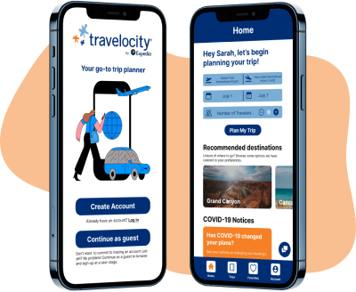

Travelocity Redesign
Overview
Redesigned the Travelocity app to be a seamless one-stop trip booking experience with improved flow and mobile interface.
SB Creative Lab's 2022 PiXEL Designathon Beginners Category First Place Winner
Collaborators
Muskaan Mathur and Kristie Le
Timeframe
April 7, 2022 - April 13, 2022
Problem
With countries and cities slowly reopening their borders, students and families are thinking about planning memorable senior trips, study abroad programs, or family vacations. However, despite the numerous trip planners, and accommodation booking tools, the user experience falls short. Travelocity wants a redesign to improve the app’s user experience by improving the flow and mobile interface.
Solution
A redesigned app that provides a seamless one-stop trip booking experience that covers all aspects of the trip from flights to accommodations to tours.
Research
We conducted secondary research through competitor analysis and primary research in the form of a survey.
Competitor Analysis
Each member of the team was tasked with analyzing the pros and cons of both the app we were redesigning, Travelocity, and a competing app (i.e. Kayak, Tripadvisor, and Hopper). The app I analyzed was Hopper. The goal of this step was to better understand the app we were redesigning, as well as, learn from other apps to see what was and was not working for them since we lacked knowledge about travel apps.


Main Takeaways From Competitor Analysis
Travelocity: The app is not very first-time users friendly. A lot of features are not explicitly stated so first-time users might not know they exist and might not know where to find them. For example, the “explore trips” page was actually one of my favorite features on the app; however, I had no clue about it when I first started using the app. Our favorite aspect of the app is how comprehensive the trip planning could be when using the “explore trips” page because all your related accommodations, flights, and tickets for your trip were all in one place. We later decided to structure our redesign around this feature to create a seamless one-stop trip booking experience rather than having the app feel like a mishmash of different services.
Hopper: Hopper has a very clear target audience, Gen Z travelers. This could be seen through its youthful, fun aesthetic through the use of bright colors and cute animal animations. In addition, the app constantly reminds users of how Hopper is helping them save money through cashbacks, discounts, vouchers, deals, fee predictions, and insurance; this is perfect for Gen Z travelers who usually are on a tighter budget. The app also makes it easy to plan trips as a group through its sharing feature and travel buddy feature.
Tripadvisor: Tripadvisor places its emphasis on user interaction through forums, guides, and reviews.
Kayak: Kayak is the most similar to Travelocity but differentiates itself with features such as theme selection and flight inspiration.
Survey Structure
For our survey, which we conducted via a Google Form, we used a mix of multiple-choice, checkbox, and free-response questions. We made sure to word our questions very objectively and to leave the responses open-ended.
Survey Results
We received 21 survey responses. Our demographic is quite diverse in terms of age as they range from 18-65+, with the majority (57.1%) being from ages 18 to 24.
First, we learned that all our respondents travel in groups. In addition, 71.4% of respondents like to plan collaboratively and all respondents plan at least one month in advance. From these results, we concluded that group planning is a crucial feature for users.
Next, we asked about the reason for their travels. Results suggest that respondents mainly travel for leisure (68.4%), mainly due to the beauty of the location and for family, while some travel for business (15.8%) purposes.
Next, we asked about the services they use on travel apps. Here are the results:

From this, we conclude that aside from Cruises and Show tickets, users would most likely take advantage of all the services offered by Travelocity, further justifying the importance of creating an inclusive, one-stop travel experience where users can plan every aspect of their trip in one place.
In terms of features, the most popular features amongst our respondents include customer reviews, comparing options, favorites button, top deals, pictures, Covid info, and Visa info. Thus, we will keep and highlight these features during our redesign.
Affinity Diagram
Next, using the information gathered through competitor analysis and our survey, we created an affinity diagram to find common themes.
Conclusions From Research
From our affinity diagram, we decided to focus our redesign on the following:
- Most users will utilize multiple services when planning trips so instead of dividing the app by the different services, users can benefit more if there is one place where they can plan all aspects of their trip.
- Group planning features are essential.
- Focus on providing the following features: customer reviews, comparing options, favorites button, top deals, pictures, Covid information, and visa information.
User Persona
From our research, we created one user persona and began to brainstorm ideas to help solve the pain points of this user.

Ideation
User Flow
We began by mapping out the user flow to see which pages needed to be created. Afterward, we moved on to mid-fidelity prototyping.
Mid-fidelity Wireframing
We began to produce mid-fidelity frames for each page using Figma. As mentioned previously, we focused on redesigning the app into a comprehensive, seamless trip planning experience. Thus, we spent the most time redesigning the home page. Instead of having the user pick which service (i.e. stays, flights, packages, cars, things to do, and cruises) they want to begin with first, we had them pick their start and end location, time of travel, and the number of travelers. Then, they will be directed to a page where they can begin to plan any and all aspects of their trips.

Considering how all our respondents emphasized that they mainly travel in groups and plan collectively, we designed an “invite and collaborate” feature for users to more efficiently plan collectively.

We also noticed Travelocity pages often have a lot of words resulting in cognitive overload, especially on the hotel pages. Referencing the other travel apps we analyzed, we redesigned the format of other pages, such as the hotel pages, to best display information to users and reduce cognitive load. We also prioritized the popular features mentioned in our survey such as customer reviews, favorites button, pictures, and Covid information.
High-Fidelity Prototype
We used the font and colors from the logo as the main colors and font of our redesign.

Final Solution


Challenges and Takeaways
Time constraint was our main challenge. We only had a little less than five days to complete the entire redesign so we had limited time to conduct research, as well as, ideate and prototype. Since all designers are full-time college students with conflicting schedules and were all located in different locations, scheduling a time to work together remotely was difficult. In addition to our time constraints, most of the designers involved in the project, including myself, were fairly new to UX design sprints, with most of us having done one or fewer design sprints. Thus, we were quite inexperienced and also had to learn how to do complex prototyping on Figma in a few days.
My biggest regret is not having enough time to complete our prototype. We built the majority of the pages we had originally envisioned; however, due to time constraints, we were not able to prototype all the pages. Thus, not every button works in our prototype and the formatting and design are not perfect. The pages are also not fully completed with all the features we wanted to add.
The biggest takeaway from this project is the importance of time management. Since we were all fairly new to design sprints, we began by using tools we had learned through design sprint guides, school, or boot camps, such as conducting surveys, competitor analysis, affinity mapping, user flows, and user personas. Thus, we spent the majority of our time (2.5 days) understanding our product and our users, 0.5 days ideating, 1 day creating mid-fidelity wireframes, and 1 day creating the high fidelity prototype. Looking back, we should have spent only 1.5 days on understanding and defining. Though this was great practice for using different UX Design tools, not all tools were equally useful to our understanding of the product and user. For example, the affinity diagram was not very useful, and though competitor analysis was very helpful, we spent way too much time on it. The extra day should instead be spent on prototyping since that was the step that took up the most time and was most difficult since we had no prior experience doing complicated prototyping.
Another important takeaway from this design sprint was the importance of communication between collaborators. For this design sprint, I was randomly grouped with two other designers who I had never worked with before. Many times throughout the design sprint, we would be working on something only to later realize that our understanding of what we were doing was different. We would then have to spend time going over our plan to make sure everyone was on the same page. We later learned to always make sure everyone was on the same page about the plan before we began working on anything.
In addition, we all had conflicting ideas on many aspects of the redesign; however, looking back I am so thankful for this. In class, my professors always taught us that one of the most important skills of a designer is the ability to explain why they made certain design decisions, as well as, convince various stakeholders to support their design decisions. Though I have experience explaining my design decisions when presenting my projects in front of my class, I have never had to convince anyone to agree with my design decisions. Thus, this was an invaluable first experience for me to practice and hone this skill. It was especially hard especially since we were on a time crunch; however, I do feel that my verbal persuasion and explanation skills improved throughout the design sprint. I also learned that instead of doing something first and then explaining, which has the potential of leading to confusion, differing opinions, and maybe even resulting in us redoing the whole thing, we learned to explain first and made sure everyone was on the same page before implementation.
I learned that sometimes differing opinions don’t necessarily come from disagreement but rather the lack of understanding or the difficulty of envisioning the final product. I also learned that visual aid is oftentimes more useful and easier to understand than a verbal description. Thus, I often created a very simple mid-fidelity model first to better explain my design decisions to my peers.
I also learned that I won’t always be able to persuade others to agree with my designs and that’s alright. A lot of the design decisions that I did not agree with turned out way better than expected, so I also learned to be more open to other people’s opinions.
Next Steps
As mentioned above, not all of the elements have been prototyped and many of the features we initially envisioned have not been included in our final prototype, so the next step would be to create a fully working prototype with all the additional features we didn’t have time to include.
Our design was judged by a panel of professional UX Designers who provided us with valuable feedback. Their main constructive criticism was of our lack of a clear target audience. I think Travelocity should set its target audience as millennials and Gen X with an emphasis on family travel. First, these two age groups travel the most according to statistics. Secondly, Hopper is already super specific to Gen Z through its aesthetic and features, so there is no need for Travelocity to compete with Hopper for this audience. Third, the focus on family derives from the fact that most millennials and Gen X have children, and thus usually travel as a family/group; our survey also reports that none of our respondents travel solo. Choosing this target audience also means we can keep some of Travelocity’s original branding, such as the colors and features. The one-stop trip planning experience and our collaboration feature from our redesign also work well with this target audience since both features are perfect for group planning. In terms of features, we could add more features that cater to families such as seat picking options, a child-friendly filter, and more.
Final Thoughts
Overall, this experience was really stressful due to the time constraint but a lot of fun and very fulfilling. I was able to practice many UX tools, learn about time management, practice explaining my design decisions, and learned to do more complex prototyping on Figma.